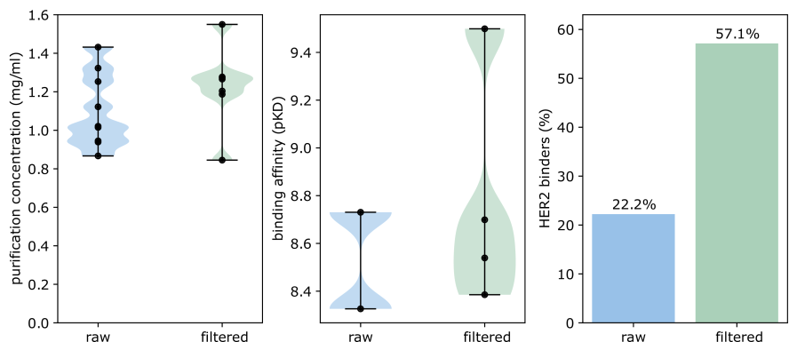

AbDiffuser: Full-Atom Generation of In-Vitro Functioning Antibodies
Abstract
We introduce AbDiffuser, an equivariant and physics-informed diffusion model for the joint generation of antibody 3D structures and sequences. AbDiffuser is built on top of a new representation of protein structure, relies on a novel architecture for aligned proteins, and utilizes strong diffusion priors to improve the denoising process. Our approach improves protein diffusion by taking advantage of domain knowledge and physics-based constraints; handles sequence-length changes; and reduces memory complexity by an order of magnitude enabling backbone and side chain generation. We validate AbDiffuser in silico and in vitro. Numerical experiments showcase the ability of AbDiffuser to generate antibodies that closely track the sequence and structural properties of a reference set. Laboratory experiments confirm that all 16 HER2 antibodies discovered were expressed at high levels and that 57.1% of selected designs were tight binders.
1 Introduction
00footnotetext: Correspondence to Andreas Loukas andreas.loukas@roche.com.We focus on the generation of immunoglobulin proteins, also known as antibodies, that help the immune system recognize and neutralize pathogens. Due to their potency and versatility, antibodies constitute one of the most popular drug modalities, with 10 out of 37 newly FDA-approved drugs in 2022 being immunoglobulins (Mullard, 2022). The ability to generate new antibodies with pre-defined biochemical properties in silico carries the promise of expediting the process of drug design.
A number of works have attempted to generate antibodies by learning to form new sequences that resemble those found in nature (Gligorijević et al., 2021; Ferruz et al., 2022b; Singer et al., 2022). An issue with sequence-based approaches is that it is hard to determine the properties that render a protein a functional molecule (and an antibody a potent drug) without inspecting a 3D model of the functional state such as an interface or active site. So far, nearly all of the first design methods that have enabled novel protein design employed carefully curated structure-function information to power nearly all scoring of designs (Kuhlman et al., 2003; Leman et al., 2020; Huang et al., 2007). The determinant role of structure on function has motivated numerous works to co-design sequence and structure (Anishchenko et al., 2021; Harteveld et al., 2022; Vinod et al., 2022; Jin et al., 2022b; Kong et al., 2023a; Anand et al., 2022; Lisanza et al., 2023) or to first design the protein backbone and then fill in the amino acid identities (Watson et al., 2022; Ingraham et al., 2022; Eguchi et al., 2022; Trippe et al., 2022; Lin & AlQuraishi, 2023; Wu et al., 2022; Lee et al., 2023).
Section Title
This is a section of text content. It provides information and context about the research and findings. The text should be readable and the layout should adapt to various screen sizes to ensure a good user experience on all devices.
Additional textual content here. The image above should be interactively zoomable for mobile users to explore details without compromising the readability of the text.
Example of a Math equation: \( E = mc^2 \)
| (1) |